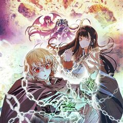
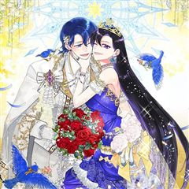
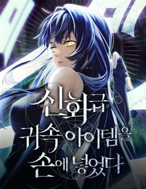
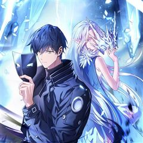
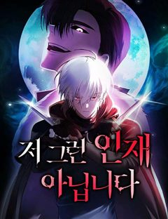
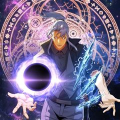

판타지 사이다·참교육 웹툰 추천 TOP 30
판타지 작품 중에서 사이다, 참교육, 인생역전, 다크히어로 같은 요소가 들어간 작품만 골랐어요. 네이버웹툰·카카오웹툰·레진코믹스에서 조건에 맞는 작품 173개 중 인기 순으로 30개를 골랐어요. 인기 TOP 3: 가드패스, 이번 생은 가주가 되겠습니다, 무지개다리 파수꾼
2026-10-02 기준 · 성인 작품 제외
내 취향으로 더 좁혀서 추천받기 →-
1
 카카오웹툰
카카오웹툰가드패스
평소 먹는 것을 좋아해 뚱뚱하고 큰 체격을 가진 '임세준'. 그는 뚱보라는 놀림에도 신경 쓰지 않는 자존감이 높고 확고한 성격을 가졌다. 그에게 단 한 명의 친구 '서하진'. 그녀는 어릴 적부터 세준을 지켜주기 위해 늘 운동을 배워왔다. 어느 날 세준은 같은 반 일진과 트러블이 생기고…
판타지사이다학원물배틀카카오웹툰에서 보기 → -
2
 카카오웹툰
카카오웹툰이번 생은 가주가 되겠습니다
“…한번 해 보자. 내가 가주가 되는 거야.” 제국에서 제일가는 가문, 롬바르디의 사생아로 환생한 피렌티아. 게다가 이 가문은 막대한 부는 물론 외교와 문화까지 통달한 말그대로 제국의 역사 자체! 금수저 오브 금수저 인생 당첨! 앞으로는 탄탄대로일 거라 생각했는데…. 아버지는 돌아가시…
판타지사이다로판회귀카카오웹툰에서 보기 → -
3
 카카오웹툰
카카오웹툰무지개다리 파수꾼
돈과 성공만을 전부로 알던 유명 수의사 이한철. 그는 어느 날 사고 이후, 동물들의 목소리를 들을 수 있게 된다. 그렇게 동물 병원을 찾은 여러 동물들의 이야기를 듣던 어느 날, 길에서 만난 강아지 밍구의 살려달라는 목소리를 듣게 되는데.. 동물의 목소리를 듣는 수의사 이한철, 동물을…
판타지사이다눈물샘자극카카오웹툰에서 보기 → -
4
 카카오웹툰
카카오웹툰무림세가 천대받는 손녀 딸이 되었다
무협지 속 세상으로 빙의한 주인공. 남주인공을 영웅의 길로 이끄는 참스승이자 완전체, 백리의강의 어리석은 민폐딸 백리연으로 빙의한다. 뜻밖의 죽임을 당하고, 눈을 떠보니 모든 것을 되돌릴 수 있는 아이 때로 회귀하는데. "나, 이번엔 사랑받을 수 있는 거야?" 이번 생에서는 민페딸이…
판타지사이다로판육아물카카오웹툰에서 보기 → -
5
 카카오웹툰
카카오웹툰빙의자를 위한 특혜
※사후 세계를 대비하세요! 죽기 직전에 받은 이상한 스팸문자. 죽은 줄 알고 눈떠보니 빙의심사국이다. 정말 사후 세계가 있다고? 책 속으로 빙의될 거라고? "특별히 선호하는 장르가 있으신가요?" 전생에 덕질로 모든 장르를 섭렵한 나. 다음 생은 귀염 뽀짝한 여자아이가 되…
판타지사이다로판빙의카카오웹툰에서 보기 → -
6
 네이버웹툰
네이버웹툰나 혼자 만렙 뉴비
게임 너튜버로 활동 중인 주인공 진혁은 유일하게 [시련의 탑]의 엔딩을 봤지만, 게임의 인기가 하락하며 더 이상 게임 너튜버로서의 삶도 유지하기 힘들어진다. 엔딩을 보았기에 이대로 게임을 마무리하려는 진혁. 바로 그날, [시련의 탑]은 현실이 되었다. 게임의 모든 요소를 다 알고 있는…
판타지사이다레드아이스 스튜디오하렘게임네이버웹툰에서 보기 → -
7
 카카오웹툰
카카오웹툰재앙급 영웅님이 귀환하셨다
지상에 최강의 영웅이 있었다. “하지만 죽었잖아. 우리가 죽인 놈이 어떻게 돌아와?” “그러게. 돌아올 수 있으면 한번 돌아와 보라지.” 그런데 20년 만에 진짜 돌아와 버렸다? “뭘 그리 놀래? 왜. 양심에 찔릴 짓이라도 하셨나?” 이 XX들. 가만 안 둔다.
판타지사이다학원물복수극카카오웹툰에서 보기 → -
8
 카카오웹툰
카카오웹툰악녀라서 편하고 좋은데요?
"악녀라서 뭐? 편하고 좋기만 한데?" 2020년 카카오페이지 올해의 웹소설 <악녀라서 편하고 좋은데요?> 웹툰으로 화려하게 다시 태어나다! 은수저X, 금수저X :+: 오리하르콘 수저 :+: 악녀로 빙의한 윤도희 180,000,000도 인생 역전에 성공한다. 소심한 본체 그렇지 못한…
판타지사이다로판빙의카카오웹툰에서 보기 → -
9
 카카오웹툰
카카오웹툰템빨
[신영우 (유저 네임: 그리드)] 세계 최고의 가상 현실 게임 <SATISFY>. 현실에서나, 게임 속에서나, 불운은 항상 그의 곁을 맴도는데.... 퀘스트 수행 중 우연히 발견한 게임 속 로또, '파그마의 기서'. 20억 명이 넘는 유저 중 유일한 최강의 레전드리 직업으로 전직. "…
판타지사이다학원물게임판타지카카오웹툰에서 보기 → -
10
 네이버웹툰
네이버웹툰퀘스트지상주의
[외모지상주의], [싸움독학], [인생존망]과 세계관을 공유하는 작품! 공부, 싸움, 외모. 뭐 하나 잘난 것 없는 평범한 고등학생 ‘김수현’의 눈앞에 갑자기 퀘스트창이 나타났다! 첫 번째 퀘스트, [엄마한테 사과하기]를 완료한 수현은 보상으로 키가 3cm 커지게 되는데! 퀘스트 엄청…
판타지사이다참교육인생역전집착녀네이버웹툰에서 보기 → -
11
 카카오웹툰
카카오웹툰픽 미 업!
그 누구도 던전의 끝까지 오르지 못한 극악의 난이도를 자랑하는 모바일 가챠 게임 <픽 미 업!(Pick me up!)> 마스터 오브 마스터라 불리는 세계 랭킹 5위의 마스터 '로키'는 던전을 깨던 중 정신을 잃게 된다. 깨어나 보니 레벨도 1, 등급도 1성인 <픽 미 업!> 속 영웅…
판타지사이다액션게임판타지카카오웹툰에서 보기 → -
12
 네이버웹툰
네이버웹툰99강화나무몽둥이
약육강식이 진리인 가상 현실 게임 '크로노 라이프'. 허접이라며 무시만 당하던 '나'는 우연히 얻은 초보용 기본 무기 '나무 뭉둥이' 를 +99 강화까지 성공하게 되고, 본인을 무시하던 놈들을 찾아다니며 몽둥이로 무자비하게 패기 시작하는데..! 막장 스케일 사이다 액션 스타트!!
판타지사이다게임유혹녀명랑녀네이버웹툰에서 보기 → -
13

카카오웹툰묵향 다크레이디
마교의 교주로서 극강의 무공을 자랑하던 묵향은 적들(혈교)에 의해 생전 처음 보는 생소한 이세계(판타지 세계)로 떨어지게 된다. 그곳에서 엘프, 마법사, 기사, 드래곤 등 새로운 존재들과 만나며... 무림 최고수 묵향이 원래 자신의 세상(무림)으로 돌아가기 위해 긴 모험을 떠나게 된다…
판타지사이다학원물카카오웹툰에서 보기 → -
14
 카카오웹툰
카카오웹툰돈으로 약혼자를 키웠습니다
넘치는 재력, 빼어난 외모. 일리아 블로든의 인생은 완벽했다. 약혼자의 바람을 목격하기 전까지는. "취향, 취미, 내 모든 걸 바꾸고, 바라는 모든 걸 들어줬는데... 더 이상은 호구처럼 살지 않을 거야. 파혼해 주겠어!" 완벽한 파혼을 위한 새로운 약혼자, 카르한 에반테온. 카르한의…
판타지사이다설렘폭발로판로맨틱코미디카카오웹툰에서 보기 → -
15
 카카오웹툰
카카오웹툰더 챌린저
'루저', '약자', '땅바닥'. 모두 현실에서 나를 부르는 호칭들이다. 하지만 그건 전부 '현실'에서의 이야기일 뿐. 가상현실 게임에서조차 '루저'라는 법은 없잖아? 게임 속에서 나는 최고가 된다! '루저' 박노아의 프로게이머 도전기. <THE CHALLENGER>
판타지사이다성장물카카오웹툰에서 보기 → -
16
 네이버웹툰
네이버웹툰언니, 이번 생엔 내가 왕비야
약혼자, 언니, 부모. 모든 것으로부터 버려진 그 날, 아리아드네는 15년 전으로 회귀한다. “젠장! 나는 지금 너에게 구애하는 거라고!” 태도가 완전히 달라진 전생의 약혼자부터, “울지 마, 아리아드네. 너는 네가 얼마나 예쁜지 모르지?” 그녀에게 첫눈에 반한 다정한 왕자님까지. 이…
판타지사이다레드아이스 스튜디오서양가족네이버웹툰에서 보기 → -
17
 네이버웹툰
네이버웹툰샤MONEY즘
“진짜 일류 무당은 여의도에서 논다.” 주가의 오르내림을 예측하는 것만으로 수십, 수백 억을 벌 수 있는 여의도의 투자사들은 신통력이 있는 무당들을 고용했고, 그것은 여의도를 일류 무당들의 무대로 만들었다. 가난한 소년이었던 천지승은 그런 여의도에 살굿으로 주가를 내리는 무당으로 고용…
판타지인생역전주식오컬트판타지자본주의네이버웹툰에서 보기 → -
18

카카오웹툰악녀는 오늘도 즐겁다
남친을 빼앗아간 친구가 웃으며 청첩장을? 하! 시원하게 사이다를 날려주고 돌아와 잠들었는데… 깨어나니 미모, 재산, 지능 모든 걸 다 갖춘 로판 속 악녀로 빙의했다. 언니한테 부족한 건 남자 보는 눈뿐이에요. 쓰레기 같은 황태자는 여주 한테 버려버리고 우리 돈과 권력을 시원하게 누려보…
판타지사이다로판빙의카카오웹툰에서 보기 → -
19

네이버웹툰신화급 귀속 아이템을 손에 넣었다
D급 무투계 레이더로 마법계 레이더들의 고기방패나 하며 별 볼 일 없이 살던 재현. 그러던 어느 날, 던전에서 우연히 "오딘의 눈" 이라는 최강의 귀속 아이템을 얻게 됐다. 신의 눈을 가진 자, 세계를 구할 신의 대적자의 운명을 개척하라!
판타지사이다아카데미물아포칼립스게임판타지네이버웹툰에서 보기 → -
20

카카오웹툰얼어붙은 플레이어의 귀환
세상이 바뀌고 5년. 최종보스가 나타났다. [지구 에어리어의 최후의 보스, 서리여왕이 출현합니다.] 최후의 보스! 그녀만 처치하면 예전처럼 살 수 있다! 인류 최고의 플레이어, 어둑서니를 포함한 다섯 명의 플레이어가 마침내 서리여왕을 쓰러뜨리지만... 그들은 기나긴 잠에 빠지는 혹독한…
판타지사이다학원물게임판타지카카오웹툰에서 보기 → -
21카카오웹툰
소설 속 엑스트라
"나는 누구지?" 이 세상은 내가 쓴 소설. 그러나 나는 단 한 번도 쓴 적 없는 인물이 되었다. 얼굴은 물음표에다, 소설 속 그 누구와도 접점이 없는, 아무도 기억 못할 그런 인물. 영웅 아카데미에 입학한 엑스트라, 아니 소설 속 먼지가 살아남는 법. 남은 소설 분량까지 버텨야 한다!
판타지사이다학원물성장물카카오웹툰에서 보기 → -
22
 네이버웹툰
네이버웹툰히어로 킬러
전쟁은 빌런들의 패배로 막을 내렸다. 이제 세상은 부패한 히어로들이 지배하고 있다. 그리고, 그런 히어로들 중 하나가 이화의 언니를 죽였다. 언니를 죽인 게 누구인지는 모르지만 상관없다. 한 놈씩 죽이다 보면 그중에 있을 테니까. 이화는 매일 밤 영웅들을 사냥하는 빌런, 히어로 킬러가…
판타지사이다참교육현대판타지자극적인네이버웹툰에서 보기 → -
23
 카카오웹툰
카카오웹툰블랙기업조선
밀리터리, 스팀펑크 등등 온갖 덕질에 미친 잡덕후가 환생했다. 그런데 아버지가 세종대왕? 덕질에 능한 군주와 덕질에 미친 아들, 그리고 갈려 나가는 대신들과 수많은 인간들. 오늘도 조선의 밤은 야근의 불빛이 가득하다.
판타지사이다정치카카오웹툰에서 보기 → -
24

네이버웹툰저 그런 인재 아닙니다
스트레스만 받으면 피를 토하는 병약하기 짝이 없는 나, 데온 하르트. 하지만 어쩐지 강하다는 오해를 받고 제국에서는 모두의 두려움을 받는 하르트 명예 백작인 동시에, 마계에서는 마왕이 가장 신임하는 0군단장이 되었는데… 예?! 제가요? 저 그런 인재 아닌데요?!
판타지다크히어로세계관이세계소설원작네이버웹툰에서 보기 → -
25
 네이버웹툰
네이버웹툰나를 바꿔줘
수상한 생명보험에 드는 조건으로, 하루 아침에 내가 원하는 외모로 살 수 있게 된다면? 인생을 바꾸기 위해 얼굴을 훔치다!
판타지참교육고자극드라마자극적인사회고발네이버웹툰에서 보기 → -
26
 카카오웹툰
카카오웹툰2레벨로 회귀한 무신
[무가치한 인류를 삭제합니다] 게임인 줄로만 알았던 '배틀넷'이 인류에게 재앙을 불러왔다. 온 우주의 생물들이 목숨을 걸고 경쟁하는 '스페이스 리그'가 개최 후 지구의 대표 인류는 패배를 반복하면서 결국 인류는 종말을 맞이했다 단 한 사람만 빼곤 '무성' 성지한. 그의 스킬 '무명신공…
판타지사이다게임판타지카카오웹툰에서 보기 → -
27

카카오웹툰4000년 만에 귀환한 대마도사
웨스트로드 아카데미의 열등생, 블레이크 가문의 수치. 괴로운 삶을 이기지 못해 죽음을 선택한 프레이 블레이크의 몸에 새로운 영혼이 깃든다. “뭐야, 이 몸뚱이는? 하나부터 열까지 손 봐야겠군.” 대마도사 루카스 트로우맨. 열등생 프레이 블레이크의 육체로 복수의 기회를 얻다!…
판타지사이다학원물환생카카오웹툰에서 보기 → -
28
 카카오웹툰
카카오웹툰악녀 황후의 전속 시녀
나 파레사 멘젤, 돈에 눈이 멀어 악명 자자한 황후의 전속 시녀가 되었다. 얼마나 대단한 악녀인가 싶었는데, 악녀는 무슨? 그저 까칠한 고양이잖아?! 악녀라 불리는 이면에 존재하는 상처 가득한 모습에, 그녀를 돕고 싶다고 생각했다. “네가 시녀로 위장한 첩자라면 자네를 처분할 수밖에…
판타지사이다힐링로판로맨틱코미디카카오웹툰에서 보기 → -
29
 네이버웹툰
네이버웹툰A.I. 닥터
태화 그룹이 미래를 걸고 개발한 진단 목적 A.I. 바루다! 내과 레지던트 1년 차 이수혁은 바루다를 견학하던 중 원인 모를 폭발에 휘말려 정신을 잃고 만다. 그리고 다시 정신을 차렸을 때 그는 자신의 머릿속에 존재하는 A.I. 바루다를 마주한다. 이미 절대 떨어질 수 없는 사이가 되…
판타지사이다현대판타지현대직업드라마네이버웹툰에서 보기 → -
30
 네이버웹툰
네이버웹툰회귀한 용병은 다 계획이 있다
몰락한 페르디움 가문의 복수를 위해 대전쟁을 일으킨 대륙 7강 용병왕 지셀 페르디움. 모든 복수가 순조롭게 마무리되던 와중, 예상치 못한 인물 아이던이 등장해 지셀의 계획을 무마시키고 그의 목을 벤다. 그렇게 지셀은 죽을 줄 알았지만, 눈을 떠보니 가문이 몰락하기 전의 어린 지셀로 회…
판타지참교육액션판타지미친작화요즘핫한추천작네이버웹툰에서 보기 →